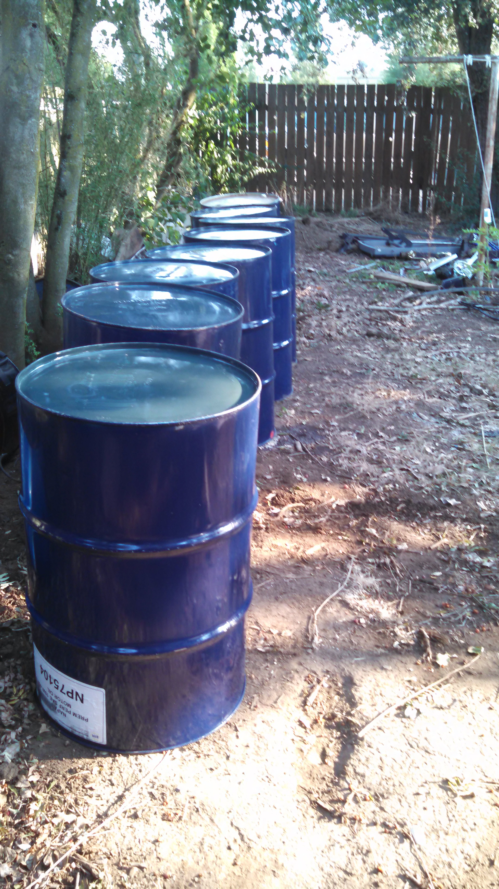
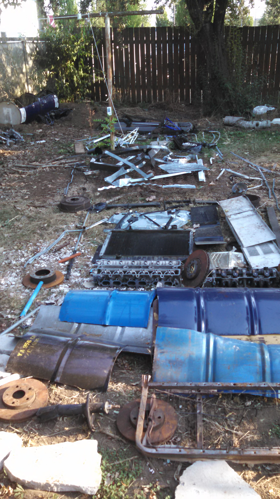

Do Not Do It Yourself
Do Not Do It Yourself
At our secret laboratory the neighbors keep calling 911 on us. So, we have conspired to make a visual barrier to increase the curb apeal and reduce neighbor visibility.
I laid dows some metal as a mock up and got some drums.
 The idea is to take scrap metal frame, then put it between two drums that have been modified to become planters.
The first attempt at privacy was to take a 55 gallon drum, cut a hole and put some stone and dirt in the barrel. We selected bamboo because of its evergreen and fast growing properties. Its resilience and tenacity are also encouraging.